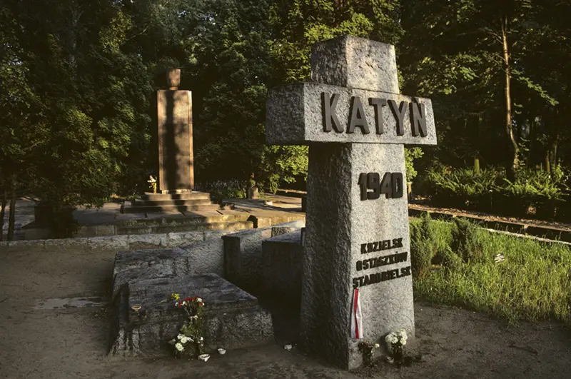

otras noticias
- Cómo un viaje a Noruega me hizo ver que estaba equivocado y que la Tierra no es plana
- Las imágenes falsas creadas con IA para intentar atraer el apoyo de los votantes negros hacia Trump
- La princesa Kate pide disculpas por la "confusión" que causó su foto retirada por las agencias de noticias por inconsistencias
- “Me arrepiento de haber publicado en línea que yo era Madeleine McCann”
- El Yimeilun, la estrategia con la que China busca influir en las elecciones de Taiwán al sembrar dudas sobre su alianza con EE.UU.
- Las afirmaciones falsas y engañosas amplificadas por Elon Musk en Twitter
- Donald Trump: cómo detectar imágenes creadas por inteligencia artificial como las fotos falsas del arresto del expresidente
- Los sobrevivientes de ataques terroristas que son acusados de fingir por teóricos de la conspiración
- Quiénes son los "Ciudadanos del Reich", el grupo asociado con los golpistas arrestados en Alemania
- LOS DIABÓLICOS ORÍGENES DE LAS TEORÍAS DE CONSPIRACIÓN (Y EL REY FRANCÉS QUE CREÓ UNA DE LAS MÁS EXITOSAS DE TODOS LOS TIEMPOS)
- RUSIA INVADE UCRANIA: CÓMO SABER SI LO QUE ESTÁS VIENDO SOBRE EL CONFLICTO ES REAL O SON "FAKE NEWS"
LA MATANZA QUE LOS SOVIÉTICOS ATRIBUYERON CON ÉXITO A LOS NAZIS DURANTE 50 AÑOS
Las tropas ucranianas que ingresaron a la ciudad de Bucha, 25km al noroeste de la capital, Kiev, encontraron evidencia de lo que parecen ser horribles crímenes de guerra cometidos por las tropas rusas durante el mes que duró de ocupación.
Todo júbilo que sintieron tras obligar a las tropas rusas a abandonar la zona fue interrumpido por lo que parecían ser fosas comunes, cadáveres de civiles con las manos atadas a sus espaldas y evidencias de violación y asesinato de mujeres.
"Ahora el mundo puede ver lo que hizo el ejército ruso en Bucha", dijo a las Naciones Unidas el presidente de Ucrania, Volodymyr Zelensky.
Pero el enviado de Rusia ante la ONU, Vassily Nebenzya, desestimó las afirmaciones y dijo que eran una "provocación que fue escenificada".
Las atrocidades cometidas durante una guerra, por supuesto, no son nada nuevo, pero la negación rusa trae el recuerdo de un evento en particular: la masacre en el bosque de Katyn, en el este de Polonia, durante la Segunda Guerra Mundial, que la Unión Soviética (URSS) hizo pasar con éxito como una atrocidad nazi durante medio siglo.
En la primavera de 1940, más de 4.000 oficiales polacos fueron asesinados en los bosques cerca de la ciudad soviética de Smolensk.
Esto sucedió poco después de que la URSS, sobre la base de un acuerdo secreto con Alemania (el llamado Pacto Molotov-Ribbentrop), ocupara el este de Polonia y arrastrara a varios prisioneros, especialmente soldados, a sus campos de concentración.
Las fosas comunes de las víctimas polacas fueron descubiertas cerca de las aldeas rusas de Kozi Gory y Katyn después de que Hitler rompiera el pacto con Stalin en junio de 1941 y las tropas alemanas invadieran el territorio soviético como parte de la infausta Operación Barbarroja.
La máquina de propaganda de Joseph Goebbels no dijo nada hasta la primavera de 1943, cuando los nazis necesitaron encubrir atrocidades similares en territorio soviético.

En abril de 1943, los alemanes enviaron una comisión internacional de expertos (sus expertos, por supuesto) a Katyn, donde confirmaron que la ejecución en masa había sido obra de las tropas rusas.
Pero a fines de ese año la Unión Soviética recapturó el área e inmediatamente envió su propia comisión al sitio.
En enero de 1944, la comisión soviética transmitió sus hallazgos de que la masacre no había tenido lugar en 1940, como se pensaba anteriormente, sino a fines de 1941, después de que Alemania comenzara a ocupar la región de Smolensk.
La conclusión soviética fue clara: los perpetradores no fueron las tropas de Stalin, sino las de Hitler.
Juicios de Nuremberg
La URSS incluso intentó incluir a Katyn en la lista de acusaciones que se formularían contra los líderes de la Alemania nazi en el período previo a los juicios por crímenes de guerra en Nuremberg, convirtiendo efectivamente su versión en la historia oficial de todas las potencias aliadas.
Pero los documentos nazis y los testimonios relacionados no respaldaron el relato soviético y se dictaminó que el juicio de Nuremberg no examinaría lo ocurrido en Katyn.
Sin embargo, la mayor parte de la evidencia permaneció en manos soviéticas. Lo mismo ocurrió con el acceso a la escena del crimen, ya que Polonia era parte del bloque soviético.
Como resultado, la versión soviética de la masacre solo fue realmente cuestionada entre los círculos de emigrados polacos en el oeste.
Uno de los primeros estudios se publicó en Londres en 1948. "El crimen de Katyn a la luz de los documentos" fue editado por Jozef Mackiewicz y publicado en polaco. Posteriormente se publicó en inglés en 1965.
